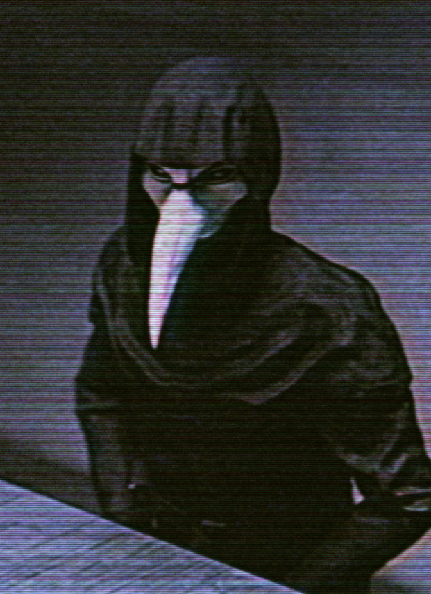

Clase: Euclid
SCP-049 es capaz de provocar el cese de todas las funciones biológicas de un organismo mediante el contacto directo con la piel. A continuación, SCP-049 suele intentar realizar una intervención quirúrgica rudimentaria en el cadáver utilizando los instrumentos contenidos en un maletín de médico negro que lleva consigo en todo momento. Aunque estas operaciones no siempre tienen "éxito", a menudo dan lugar a la creación de instancias de SCP-049-2.
Los SCP-049-2 son cadáveres reanimados que poseen habilidades motoras básicas, pero no conservan la memoria. Estos son generalmente inactivos, pero pueden volverse extremadamente agresivos si se les provoca o si han sido dirigidos por SCP-049. A pesar de estas alteraciones, SCP-049 señala a menudo que los sujetos están "curados".
